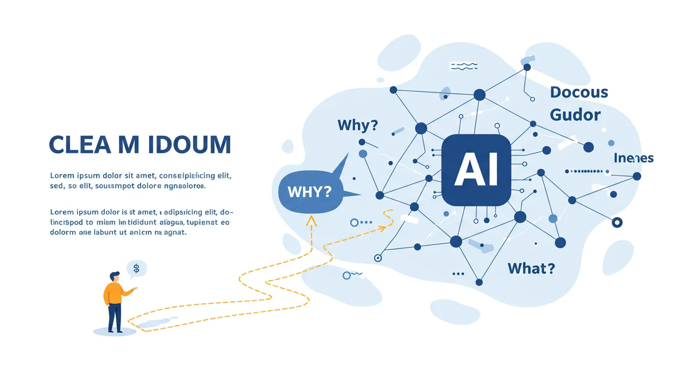
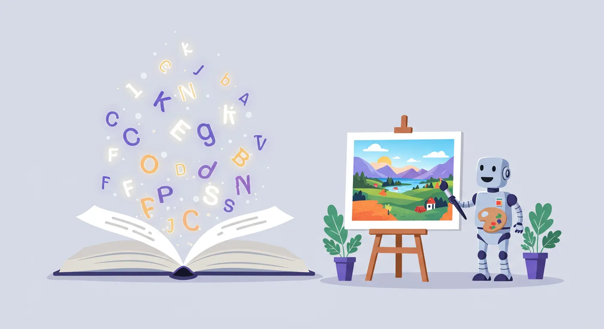
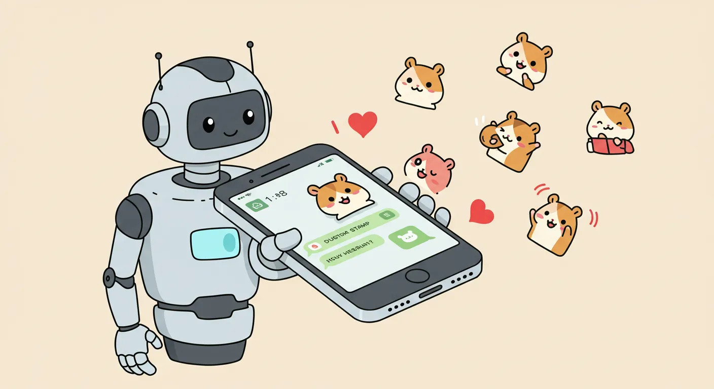

Learn AI
AIという名の翼をあなたに贈る やさしい実践教室
AIの基礎から応用まで、誰もが自分のペースで楽しく学べる、
完全無料のオンライン講座テキストです。
AIという翼を手に入れて、あなたの「できる」を、もっと遠くまで広げてみませんか？
ステップ1：AIを知る（基礎編）

ステップ2：AIで創る（クリエイティブ応用編）


AIという名の翼をあなたに贈る やさしい実践教室
AIの基礎から応用まで、誰もが自分のペースで楽しく学べる、
完全無料のオンライン講座テキストです。
AIという翼を手に入れて、あなたの「できる」を、もっと遠くまで広げてみませんか？


